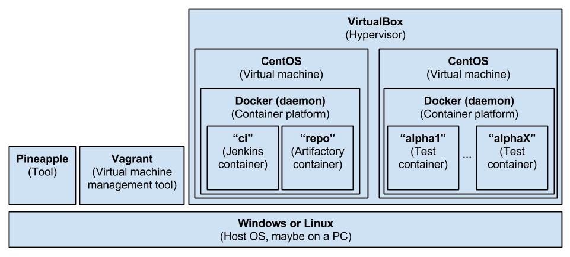

Pineapple Continuous Integration
This page describes the design of the test infrastructure and continuous integration setup used to test the Pineapple project.
Used Components
The continuous integration setup for Pineapple consists of the components:
- JUnit will be used as test framework. At some point, it must be determined whether JUnit is suitable for implementation of larger scale system tests which involves multiple servers, Pineapple instances, agents and plugins.
- Jenkins is used as continuous integration server.
- Artifactory is used as a repository manager for management of binary artifacts.
- VirtualBox is used to provide virtualized servers to conduct tests on. VirtualBox is chosen due to its integration with Vagrant.
- Vagrant is used to provision virtual server instances.
- Docker is used to provision Docker containers within virtual server instances.
- Pineapple is used to build the setup.
Setup
The setup consists of a host machine where VirtualBox, Vagrant and Pineapple are installed. VirtualBox is used as hypervisor. Vargrant is used to define and managed virtual machines. Pineapple is used to do the initial build of the build the setup.
Virtual machines
Two virtual machines are hosted on VirtualBox:
- The build server VM
- The test containers VM
The build server VM
The purpose of the VM is to run a Docker host which contains Docker containers with the CI tools, e.g. Jenkins and Artifactory. The tools are setup through the creation of these Docker images:
- The CI container (named "ci") based on the official Jenkins Docker image. These software components and tools are installed on the "ci" container:
- Java Virtual Machine (JDK).
- Continuous integration server (Jenkins).
- Maven.
- The repository container (named "repo") based on the official Artifactory Docker image.
Pineapple module and environment configuration
Module
The setup is defined in the example module named xx-pineapple-dev-docker-install-ci-linux64. The module creates the setup through these steps:
- Installs Docker on both VMs
- Installs Artifactory on the build server VM
- Installs Jenkins on the build server VM
- Initializes Artifactory by uploading the system configuration and 3rd party artifacts.
Environment configuration
The environment used to install the setup is named linux-pineapple-ci.
The environment contains the definition of the resources:
- ssh-ci-node1 which defines SSH access to the build server VM at 192.168.99.10:22
- ssh-ci-node2 which defines SSH access to the test containers VM at 192.168.99.11:22
- docker-ci-node1 which defines access to the Docker host at the build server VM at 192.168.99.10:8082
- docker-ci-node2 which defines access to the Docker host at the build server VM at 192.168.99.11:8082
The environment, resources and credentials are created as part of the default configuration.
Build server VM configuration
Services
The SSH daemon is started and listens on 0.0.0.0:22.
The Docker daemon is running on 0.0.0.0:8082.
Test containers VM configuration
Services
The SSH daemon is started and listens on 0.0.0.0:22.
The Docker daemon is running on 0.0.0.0:8082.
Build server software components
Docker
Docker is installed as an OS service.
Docker listens on http://192.168.99.10:8082
Docker installation
The installation consists of these steps:
- Create Docker user. A custom docker user is created and added to the sudoers file.
- Update YUM. Update YUM packages.
- Add Docker YUM repository. Configure the Docker YUM repository with YUM.
- Install Docker. Docker is installed as a systemctrl service. The Docker daemon is configured using the configuration file etc/docker/daemon.json which defines the API to listen on /var/run/docker.sock/ and [::]:8082.
- The installation is validated.
Docker is configured to:
- Listen for local connections by the root user.
- Listen on 0.0.0.0:8082 to support remote usage of the REST API.
The Docker daemon configuration file daemon.json is installed in /etc/docker/daemon.json. The file configures the daemon to:
- Listen for local connections by the root user.
- Listen on 0.0.0.0:8082 to support remote usage of the REST API.
The file contains:
{
"hosts": [ "unix:///var/run/docker.sock",
"tcp://0.0.0.0:8082" ]
}
Build server Docker images
CI container ("ci")
Docker image
The image for the CI container is based on the official Jenkins Docker image.
The Jenkins image is extended to support configuration of Jenkins with the Pineapple configurations and build jobs. The extension is implemented through definition of a new docker image named pineapple/ci:1.0. The dockerfile for the CI container is located in xx-pineapple-dev-docker-install-ci-linux64/dockersrc/ci
The dockerfile copies the Jenkins configuration files to the Jenkins staging directory /usr/share/jenkins/ref/. When jenkins.sh is run (as part of starting a container) then the files are copied to the /var/jenkins_home volume used by the jenkins container.
Docker container
The CI container is named "ci".
The CI container defines a network link to the "repo" container: repo:repository while defining the DNS name repository internally in the CI container. The DNS name is used in the settings.xml to access the different repositories.
JVM
The Jenkins image inherits from the java:8-jdk docker image which installs the OpenJDK 1.8.0 JDK.
The JDK is installed to allow it to be used by Jenkins for compilation in build jobs. Alternately The Oracle JDK could be used, but it requires a valid Oracle account with user name/password.
JAVA_HOME for this image is /usr/lib/jvm/java-8-oracle.
Jenkins JVM configuration
The main Jenkins configuration file is /var/jenkins_home/config.xml is used to define the path to the JDK used for compiling build jobs:
...
<jdks>
<jdk>
<name>java-1.8.0-openjdk</name>
<home>/usr/lib/jvm/java-1.8.0-openjdk-amd64</home>
<properties/>
</jdk>
</jdks>
...
Jenkins Maven configuration
The Jenkins Maven configuration file /var/jenkins_home/hudson.tasks.Maven.xml is used to define the version of Maven to be installed and used by Jenkins for build jobs:
<?xml version='1.0' encoding='UTF-8'?>
<hudson.tasks.Maven_-DescriptorImpl>
<installations>
<hudson.tasks.Maven_-MavenInstallation>
<name>maven-3.1.1</name>
<properties>
<hudson.tools.InstallSourceProperty>
<installers>
<hudson.tasks.Maven_-MavenInstaller>
<id>3.1.1</id>
</hudson.tasks.Maven_-MavenInstaller>
</installers>
</hudson.tools.InstallSourceProperty>
</properties>
</hudson.tasks.Maven_-MavenInstallation>
</installations>
</hudson.tasks.Maven_-DescriptorImpl>
Maven configuration
The standard Maven configuration file /var/jenkins_home/settings.xml is used to define the repositories used by Maven to resolve dependencies. The configuration file can be generated by exporting it from Artifactory.
The Maven configuration file is referenced by build jobs:
<?xml version="1.0" encoding="UTF-8"?>
<settings xsi:schemaLocation="http://maven.apache.org/SETTINGS/1.1.0 http://maven.apache.org/xsd/settings-1.1.0.xsd" xmlns="http://maven.apache.org/SETTINGS/1.1.0"
xmlns:xsi="http://www.w3.org/2001/XMLSchema-instance">
<servers>
<server>
<username>admin</username>
<id>central</id>
</server>
<server>
<username>admin</username>
<id>snapshots</id>
</server>
</servers>
<mirrors>
<mirror>
<mirrorOf>*</mirrorOf>
<name>repo</name>
<url>http://repository:8081/artifactory/repo</url>
<id>repo</id>
</mirror>
</mirrors>
<profiles>
<profile>
<repositories>
<repository>
<snapshots>
<enabled>false</enabled>
</snapshots>
<id>central</id>
<name>libs-release</name>
<url>http://repository:8081/artifactory/libs-release</url>
</repository>
<repository>
<snapshots />
<id>snapshots</id>
<name>libs-snapshot</name>
<url>http://repository:8081/artifactory/libs-snapshot</url>
</repository>
</repositories>
<pluginRepositories>
<pluginRepository>
<snapshots>
<enabled>false</enabled>
</snapshots>
<id>central</id>
<name>plugins-release</name>
<url>http://repository:8081/artifactory/plugins-release</url>
</pluginRepository>
<pluginRepository>
<snapshots />
<id>snapshots</id>
<name>plugins-snapshot</name>
<url>http://repository:8081/artifactory/plugins-snapshot</url>
</pluginRepository>
</pluginRepositories>
<id>artifactory</id>
</profile>
</profiles>
<activeProfiles>
<activeProfile>artifactory</activeProfile>
</activeProfiles>
</settings>
Please notice that the repository is referenced throught the usage of the DNS name repository This name is made available to the CI container through network linking when the CI container is created.
Jenkins build jobs
Jenkins is configured with these build jobs:
- pineapple-build which builds Pineapple from trunk using the maven commands: -U clean install -P SkipTests. Unit tests are disabled through the usage of the SkipTests Maven profile. Furthermore, the build is configured to use the Maven configuration file /var/jenkins_home/settings.xml
- pineapple-build-test which builds Pineapple from trunk using the maven commands: -U clean install -P DoTests.. Unit tests are enabled through the usage of the DoTests Maven profile. Furthermore, the build is configured to use the Maven configuration file /var/jenkins_home/settings.xml
Repository container ("repo")
Docker image
The image for the repository container is based on the official Artifactory OSS Docker image. The extension is implemented through definition of a new docker image named pineapple/repo:1.0. The dockerfile for the CI container is located in xx-pineapple-dev-docker-install-ci-linux64/dockersrc/repo
The image defines the recommended volumes:
- /artifactory/data
- /artifactory/logs
- /artifactory/backup
- /artifactory/etc
Artifactory configuration
When the container is started, then the web service /artifactory/api/system/configuration is invoked with HTTP GET to trigger initialization of Artifactory.
After the initialization is completed, the web service /artifactory/api/system/configuration is invoked with HTTP POST to install the Artifactory system configuration from the file artifactory.config.xml:
<?xml version="1.0" encoding="UTF-8" standalone="yes"?>
<config xmlns="http://artifactory.jfrog.org/xsd/1.5.3" xmlns:xsi="http://www.w3.org/2001/XMLSchema-instance" xsi:schemaLocation="http://www.jfrog.org/xsd/artifactory-v1_5_3.xsd">
<offlineMode>false</offlineMode>
...
<localRepository>
<key>ext-release-local</key>
<description>Local repository for third party libraries</description>
<includesPattern>**/*</includesPattern>
<repoLayoutRef>maven-2-default</repoLayoutRef>
<enableNuGetSupport>false</enableNuGetSupport>
<enableGemsSupport>false</enableGemsSupport>
<blackedOut>false</blackedOut>
<handleReleases>true</handleReleases>
<handleSnapshots>false</handleSnapshots>
<maxUniqueSnapshots>0</maxUniqueSnapshots>
<suppressPomConsistencyChecks>false</suppressPomConsistencyChecks>
<propertySets/>
<archiveBrowsingEnabled>false</archiveBrowsingEnabled>
<snapshotVersionBehavior>unique</snapshotVersionBehavior>
<localRepoChecksumPolicyType>client-checksums</localRepoChecksumPolicyType>
<calculateYumMetadata>false</calculateYumMetadata>
<yumRootDepth>0</yumRootDepth>
</localRepository>
...
<remoteRepositories>
<remoteRepository>
<key>zk-ce</key>
<description>ZK CE repository</description>
<includesPattern>**/*</includesPattern>
<repoLayoutRef>maven-2-default</repoLayoutRef>
<enableNuGetSupport>false</enableNuGetSupport>
<enableGemsSupport>false</enableGemsSupport>
<blackedOut>false</blackedOut>
<handleReleases>true</handleReleases>
<handleSnapshots>true</handleSnapshots>
<maxUniqueSnapshots>0</maxUniqueSnapshots>
<suppressPomConsistencyChecks>false</suppressPomConsistencyChecks>
<propertySets/>
<archiveBrowsingEnabled>false</archiveBrowsingEnabled>
<url>http://mavensync.zkoss.org/maven2</url>
<offline>false</offline>
<hardFail>false</hardFail>
<storeArtifactsLocally>true</storeArtifactsLocally>
<fetchJarsEagerly>false</fetchJarsEagerly>
<fetchSourcesEagerly>false</fetchSourcesEagerly>
<retrievalCachePeriodSecs>43200</retrievalCachePeriodSecs>
<assumedOfflinePeriodSecs>300</assumedOfflinePeriodSecs>
<missedRetrievalCachePeriodSecs>7200</missedRetrievalCachePeriodSecs>
<remoteRepoChecksumPolicyType>generate-if-absent</remoteRepoChecksumPolicyType>
<unusedArtifactsCleanupPeriodHours>0</unusedArtifactsCleanupPeriodHours>
<shareConfiguration>false</shareConfiguration>
<synchronizeProperties>false</synchronizeProperties>
<listRemoteFolderItems>true</listRemoteFolderItems>
<rejectInvalidJars>false</rejectInvalidJars>
<p2Support>false</p2Support>
<p2OriginalUrl>http://mavensync.zkoss.org</p2OriginalUrl>
<socketTimeoutMillis>15000</socketTimeoutMillis>
</remoteRepository>
<remoteRepository>
<key>zk-ee</key>
<description>ZK Enterprise repository</description>
<includesPattern>**/*</includesPattern>
<repoLayoutRef>maven-2-default</repoLayoutRef>
<enableNuGetSupport>false</enableNuGetSupport>
<enableGemsSupport>false</enableGemsSupport>
<blackedOut>false</blackedOut>
<handleReleases>true</handleReleases>
<handleSnapshots>true</handleSnapshots>
<maxUniqueSnapshots>0</maxUniqueSnapshots>
<suppressPomConsistencyChecks>false</suppressPomConsistencyChecks>
<propertySets/>
<archiveBrowsingEnabled>false</archiveBrowsingEnabled>
<url>http://mavensync.zkoss.org/zk/ee-eval</url>
<offline>false</offline>
<hardFail>false</hardFail>
<storeArtifactsLocally>true</storeArtifactsLocally>
<fetchJarsEagerly>false</fetchJarsEagerly>
<fetchSourcesEagerly>false</fetchSourcesEagerly>
<retrievalCachePeriodSecs>43200</retrievalCachePeriodSecs>
<assumedOfflinePeriodSecs>300</assumedOfflinePeriodSecs>
<missedRetrievalCachePeriodSecs>7200</missedRetrievalCachePeriodSecs>
<remoteRepoChecksumPolicyType>generate-if-absent</remoteRepoChecksumPolicyType>
<unusedArtifactsCleanupPeriodHours>0</unusedArtifactsCleanupPeriodHours>
<shareConfiguration>false</shareConfiguration>
<synchronizeProperties>false</synchronizeProperties>
<listRemoteFolderItems>true</listRemoteFolderItems>
<rejectInvalidJars>false</rejectInvalidJars>
<p2Support>false</p2Support>
<p2OriginalUrl>http://mavensync.zkoss.org</p2OriginalUrl>
<socketTimeoutMillis>15000</socketTimeoutMillis>
</remoteRepository>
</remoteRepositories>
</config>
The system configuration defines:
- The local repository ext-release-local which is used to store Pineapple 3rd party libraries which isn't available in any of the public Maven libraries.
- The remote repository zk-ce which hold the publicly available ZK artifacts. The repository defines the URL: http://mavensync.zkoss.org/maven2.
- The remote repository zk-ee which hold the ZK enterprise artifacts which requires a ZK enterprise license. The repository defines the URL: http://mavensync.zkoss.org/zk/ee-eval.
The source system configuration file artifactory.config.xml is generated by configuring Artifactory maually and the exporting the configuration.
Uploading artifacts to Artifactory
The web service /artifactory/ext-release-local/path/to/jar/ is invoked with HTTP POST to install artifacts into the ext-release-local repository:
- The ZK Common library JAR and POM are installed with coordinate: org.zkoss.common:zcommon:7.0.2
- The ZK ZEL library JAR and POM are installed with coordinate: org.zkoss.common:zel:7.0.2
- The ZK library JAR and POM are installed with coordinate: org.zkoss.zk:zk:7.0.2
- The ZK Max library JAR and POM are installed with coordinate: org.zkoss.zk:zkmax:7.0.2
- The ZK Plus library JAR and POM are installed with coordinate: org.zkoss.zk:zkplus:7.0.2
- The ZK Zul library JAR and POM are installed with coordinate: org.zkoss.zk:zul:7.0.2
- The ZK web library JAR and POM are installed with coordinate: org.zkoss.common:zweb:7.0.2
- The ZK Kex library JAR and POM are installed with coordinate: org.zkoss.common:zkex:7.0.2
How to provision the build server
Create Vagrant Project
- Create Vagrant project directory: /path/to/work/pineapple-ci
- In the vagrant project directory, create a Vagrant file used to build the CI server. The Vagrant file below is included in the module xx-pineapple-dev-ssh-install-ci-linux64> in the /vagrant directory.
# -*- mode: ruby -*- # vi: set ft=ruby : #BOX_NAME = ENV.fetch("BOX_NAME", "bento/centos-7.1") BOX_NAME = ENV.fetch("BOX_NAME", "chef/centos-7.0") BOX_IP = ENV.fetch("BOX_IP", "192.168.99.10") BOX2_IP = ENV.fetch("BOX_IP", "192.168.99.11") BOX_MEM = ENV.fetch("BOX_MEM", "2048") BOX_CPUS = ENV.fetch("BOX_CPUS", "2") VAGRANTFILE_API_VERSION = "2" Vagrant.configure(VAGRANTFILE_API_VERSION) do |config| # virtual box provider specific settings config.vm.provider :virtualbox do |vb| vb.customize ["modifyvm", :id, "--ioapic", "on"] vb.customize ["modifyvm", :id, "--memory", BOX_MEM] vb.customize ["modifyvm", :id, "--cpus", BOX_CPUS] end config.vm.define :pineapple_ci do |ci_config| ci_config.vm.box = BOX_NAME ci_config.vm.network "private_network", ip: BOX_IP end config.vm.define :pineapple_containers do |ci_config| ci_config.vm.box = BOX_NAME ci_config.vm.network "private_network", ip: BOX2_IP end end
Configuration
Test setup for the Docker support project
The Docker support project is tested using the Docker host on the Test containers VM.
Requirements to test the Docker support project
To test the Docker support project, one Docker host must be provisioned.
The Docker host is provisioned independently of the tests, and the tests assume that the Docker host is available in a well defined state.
- Expected network configuration.
- Expected services are running.
Test setup for the Weblogic JMX plugin
Requirements to test the WebLogic JMX plugin
To test the plugin one virtual server must be provisioned.
The server is provisioned independently of the tests, and the tests assume that the server is available in a well defined state:
- Expected network configuration.
- Expected services are running.
- Expected users and directories exists (with the right access rights).
- Expected shared directories exists on the host and the guests.
- A JVM is installed.
- WebLogic is installed.
Test setup for the SSH plugin
TODO: write..
Requirements to test the SSH plugin
To test the SSH plugin one virtual server must be provisioned.
The server is provisioned independently of the tests, and the tests assume that the server is available in a well defined state:
- Expected network configuration.
- Expected services are running.
- Expected users and directories exists (with the right access rights).
- Expected shared directories exists on the host and the guests.
Shared Test Server Configuration - OLD SETUP TO BE REWORKED
Shared Folders
The shared folder /testcases exists on the guest and it is mapped to the directory ${java.io.tmpdir}/testcases on the host which is the default directory for directory based JUnit test cases in Pineapple. The default directory for directory based JUnit test cases is defined by the constant com.alpha.testutils.TestUtilsTestConstants.runtimeDirectory.
Test Server Configuration for the SSH plugin
Additional configurations to support testing the SSH plugin.
Test Server Configuration for the WebLogic JMX plugin
Additional configurations to support testing the WebLogic JMX plugin.
Network
- WebLogic JMX Test host:
- Purpose: Integration test of the WebLogic JMX Plugin.
- IP address: 192.168.100.11
Users
A setup must be installed to support usage of WebLogic and the Pineapple agent.
TODO: Describe used user setup.